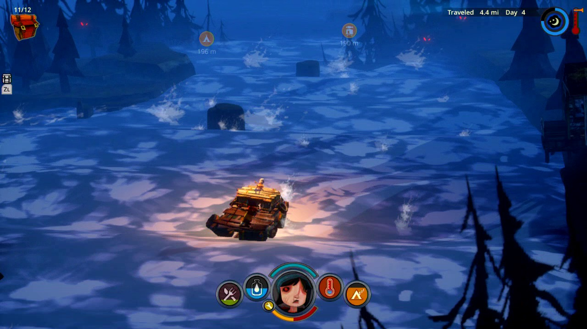
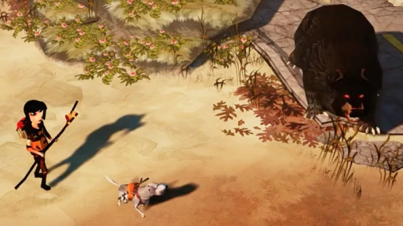
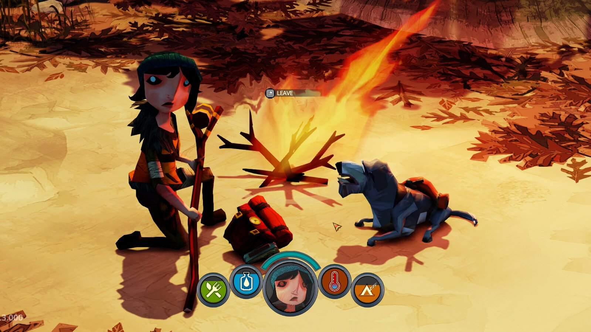
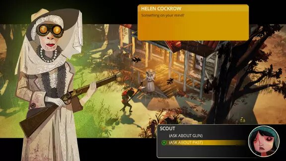
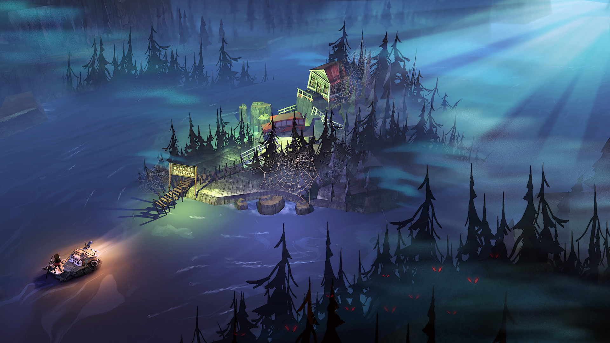

El fin de los días ha llegado. El mundo es un cruel páramo donde la muerte acecha. Animales salvajes,
enfermedades virulentas… ¿qué hacer ante tal catástrofe? A diferencia de otras aventuras de
supervivencia,
Flame in the Flood nos arrastra por las aguas de un río sin fin con la esperanza de encontrar un lugar
mejor
donde vivir. No parece mucho pero es un detalle que hace de este un videojuego especial. Análisis de The
Flame in the Flood: Complete Edition.
Parece algo instintivo. Ante la amenaza de muerte, para protegernos de los muchos peligros a los que te
enfrentan las aventuras de supervivencia, tendemos a hacernos fuertes en una posición fija; construimos
bastiones inexpugnables desde los que pelear contra cualquier criatura que se acerque a nuestros dominios.
Pero ¿qué ocurre si esto no funciona? ¿Y si lo que necesitas es simplemente seguir adelante? Avanzar sin
echar la vista atrás con la esperanza de encontrar un lugar mejor lejos, muy lejos de ese vasto yermo
infernal en el que se ha convertido el mundo a causa de un gran cataclismo que ha anegado la Tierra. No
parece un gran cambio y sin embargo lo es todo en The Flame in the Flood.
A bordo de una destartalada barcaza que a duras penas se mantiene a flote te dejas llevar por las aguas
torrenciales de un río sabiendo que ese acto de fe puede ser lo último que hagas en la vida, pero también
entendiendo que es tu única oportunidad de supervivencia. Al menos ahí no hay lobos sedientos de sangre, ni
peligrosas serpientes de cascabel, ni implacables osos acechando en la oscuridad. Tan solo tú y el río. Un
detalle que me hizo caer rendido, hace casi ya un año, a los muchos encantos de este videojuego que tras su
paso por Xbox One y PC, lleva su desafiante acción a los circuitos de PS4. Lo hace con una versión mejorada
del original que aporta leves cambios en su base jugable y añade un más que interesante "Comentarios del
Director", para que mientras luchas por tu vida entiendas también cómo se ha desarrollado la obra.
Primeros Pasos

Si te quedas solo con la parte en la que una joven y su perro se dedican a recolectar recursos y fabricar
objetos en tierra firme sí, The Flame in the Flood es una aventura de supervivencia de manual. En ella
encontraréis todo aquello que ha hecho tan popular al género estos últimos años, aunque desde una
perspectiva algo más amigable en el sentido de que no son tantas las recetas por aprender ni muchas las
materias primas que afanar. Pero ahí está el río y esa necesidad de avance constante para darle algo de
chispa al asunto.
Quedarse en una misma zona durante mucho tiempo solo tiene un final: la muerte. Y no solo por la falta de
alimentos, que por supuesto. La fauna salvaje, las enfermedades, la ausencia de un lugar seguro donde
cobijarse… son tantos los peligros y tan pocos los recursos a vuestro alcance, que prácticamente viviréis al
día en esta dura aventura desarrollada por el estudio independiente The Molasses Flood. Saquear todo a
vuestro paso y seguir adelante; ese es el camino hacia la supervivencia. Uno plagado de obstáculos.
Guiados por el curso del río tendréis que visitar localizaciones de diversa índole como granjas, iglesias,
zonas urbanas, industriales, bosques y demás, en cada una de las cuales encontraréis distintos tipos de
recurso. ¿La gracia? Dado que no podéis volver atrás, pues la fuerza de la corriente es abrumadora, en
muchas ocasiones tendréis que decidiros por uno u otro camino: ¿exploraréis una granja en busca de
alimentos, o echaréis un vistazo a la iglesia para ver si allí encontráis materiales necesarios para tratar
heridas?
Sobre el papel puede sonar una decisión la mar de sencilla pero cuando el estómago ruge, y además sufrís una
grave enfermedad, la cosa se pone bastante seria. Y es ahí donde The Flame in the Flood: Complete Edition
muestra su mejor cara. Debéis priorizar vuestras acciones. Decidir en cuestión de segundos, lo que tardaréis
en pasar de largo de una de estas zonas, si os conviene ir en una u otra dirección. Y eso genera mucha
tensión. Al menos en los primeros compases de la aventura, en los que sobrevivir puede convertirse en un
auténtico desafío: hay poco espacio en el inventario, pocos recursos y peores herramientas con las que
trabajar.
Dificultad

Que no os engañe esa bella aunque inquietante apariencia de dibujos animados que define la obra. The Flame
in the Flood es un videojuego difícil que no perdona los errores. Adentraos en una zona protegida por lobos
sin una antorcha con la que ahuyentarlos y en cuestión de segundos estaréis agonizando en el suelo con un
par de zarpazos en la espalda. O corred sin prestar atención por dónde camináis para comprobar lo rápido que
las serpientes os envenenan, mermando vuestra salud de forma lenta pero constante. Aunque en vuestro viaje
podéis encontraros con algún que otro superviviente, en esta aventura no tenéis amigos a los que recurrir al
margen de ese entrañable perro que hará de guía marcando con sus ladridos la posición de objetos de interés
o, claro, peligros. ¿Cómo defenderse de estas amenazas?
Alejado del "belicismo" de otros juegos del estilo, no son muchas las opciones con las que contaréis a la
hora de acabar con la fauna salvaje. Un rudimentario arco, carne envenenada y un par de trampas es lo único
que os mantendrá lejos de las fauces de estas criaturas. Bueno, todo esto y la antorcha, que como decía,
ahuyentará a la mayoría de fieras, aunque también atraerá a las serpientes. Que es otro detalle que me
encanta. ¿No tenéis flechas o una trampa con la que defenderos de las embestidas de un jabalí? Haced que una
serpiente le muerda y acabe así con su vida.
Esta clase de situaciones son fantásticas, aunque no son tantas como me hubiera gustado. Ya lo decía antes.
The Flame in the Flood ofrece menos opciones de supervivencia que las vistas en otros títulos del estilo,
con una escasa variedad de materias primas, herramientas, alimentos o armas en general. Tampoco es que sean
exiguas, pero al cabo de las horas, cuando ya lo has descubierto todo, la acción se torna relativamente
fácil; tienes de todo y te puedes defender de cualquier peligro. Lo que no quita para que en cualquier
momento, por un despiste o lo que sea, termines mordiendo el polvo.
La excusa de alcanzar un lugar seguro al final del trayecto es lo suficientemente atractiva como para
manteneros pegados al juego cerca de diez horas, que es lo que tardaréis en completar su modo historia. En
este sentido, hay un interesante trasfondo argumental y varios niveles con objetivos especiales que ayudan a
dotar de algo más de variedad a la acción, aunque ciertamente se echan en falta más contenidos del estilo.
Por muy vistosa que sea la acción y por muy satisfactorio que nos resulte el viaje a través de ese río
torrencial, protagonista silencioso de la obra, es difícil no quedarse con la sensación de que el juego se
ha quedado algo corto en opciones.
Diseño



Artísticamente hablando es fantástico; un juego con gran personalidad que sorprende por la vistosidad de sus
escenarios, el diseño de criaturas y el tratamiento de la iluminación. Mención especial a las tormentas que
nos azuzarán en momentos puntuales de la partida, creando una oscura atmósfera de terror que puede dejar sin
habla. Se nota aquí la mano del director de arte de BioShock, que ha realizado un trabajo encomiable dotando
de vida a este mundo post-apocalíptico que no podía contar con mejor acompañamiento musical.
Una increíble banda sonora de estilo country que ameniza como pocas el sinvivir de nuestra protagonista y su
perro, creando situaciones de una fuerza artística arrebatadora. Lástima que en esta nueva versión del
videojuego no se haya retocado la interfaz de usuario, que siento no funciona con la soltura deseada. No es
fácil navegar entre tantos menús, ni mucho menos acceder a los objetos con la presteza que en ciertas
situaciones se requiere. La acción nunca se detiene así que es un detalle a tener en cuenta, pues cuando
tienes ante ti una jauría de lobos, si no eres rápido sacando el arco… ¡ZAS! Ya puedes despedirte.